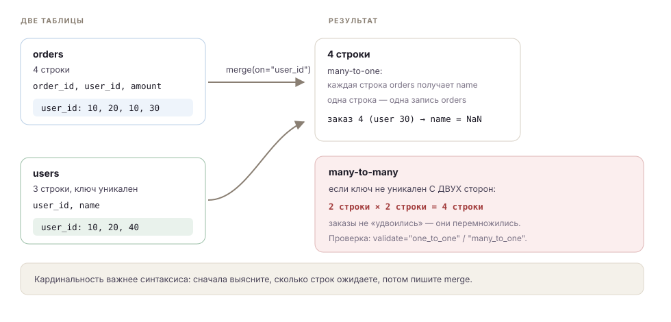

merge: кардинальность важнее синтаксиса Соединение таблиц — это не «приклеить», а «сколько строк получится»
merge легко написать и легко испортить. Синтаксис запоминается за минуту,
а вот поведение при неуникальных ключах — нет: строки не «добавляются», а перемножаются.
Поэтому сначала кардинальность, потом код.
01Зачем это backend-разработчику
- Сборка данных из нескольких источников: заказы, пользователи, товары — как в проекте недели 8.
- Проверка внешних ключей: найти заказы без пользователя, товары без категории.
- Прямой мост в SQL:
merge— этоJOIN,how— тип соединения,validate— проверка кардинальности. - Собеседование: «чем merge отличается от concat», «что будет при many-to-many», «как проверить уникальность ключа».
02Ассоциация-якорь: склейка двух списков по номеру
merge — это склейка двух таблиц по общему ключу. У каждой строки слева ищется строка справа с тем же ключом. Нашлась — склеили; не нашлась — зависит от типа join.
Опасность не в склейке, а в количестве. Если ключ справа встречается дважды, одна строка слева даст две склеенные. Если дважды с обеих сторон — четыре. Это и есть кардинальность.
03Ассоциативный ряд: восемь звеньев
- mergeсоединить по ключу
- howinner, left, right, outer
- onимя общего ключа
- кардинальностьсколько строк ожидаем
- validateпроверка «один-к-одному»
- indicatorоткуда пришла строка
- suffixesчто делать с одноимёнными колонками
- concatсклейка без ключа
04Схема: many-to-one и many-to-many

05Как это устроено на самом деле
pandas строит хеш-таблицу по ключу (глава 02!) и для каждой строки левой таблицы находит все совпадения справа. Поэтому соединение быстрое, а результат зависит от того, сколько совпадений найдено.
| how | Что остаётся | SQL-аналог |
|---|---|---|
| inner | только совпавшие | INNER JOIN |
| left | все левые + совпадения | LEFT JOIN |
| right | все правые + совпадения | RIGHT JOIN |
| outer | все с обеих сторон | FULL OUTER JOIN |
validate — это страховка, а не украшение
validate="one_to_one" упадёт с MergeError, если ключ
не уникален хотя бы с одной стороны. many_to_one — если дубли только справа.
Это дешевле, чем искать размножение строк через неделю.
merge и concat — разные операции
merge соединяет по ключу и умеет менять число строк. concat
просто склеивает таблицы: по строкам (axis=0) или по колонкам (axis=1), без сопоставления ключей.
06Лаборатория: запустить и увидеть
Фрагменты файла 16_merge_lab.py.
Шаг 1. Четыре типа соединения
orders = pd.DataFrame({"order_id": [1, 2, 3, 4],
"user_id": [10, 20, 10, 30],
"amount": [1200, 800, 500, 2100]})
users = pd.DataFrame({"user_id": [10, 20, 40],
"name": ["anna", "ivan", "olga"]})
for how in ["inner", "left", "right", "outer"]:
print(how, len(orders.merge(users, on="user_id", how=how)))
Шаг 2. indicator: что не совпало
left = orders.merge(users, on="user_id", how="left", indicator=True) print(left) # строка с user 30: name = NaN, _merge = left_only
Шаг 3. validate ловит дубли ключей
users_dup = pd.concat([users, pd.DataFrame({"user_id": [10], "name": ["anna_2"]})])
orders.merge(users_dup, on="user_id", validate="one_to_one")
# MergeError: Merge keys are not unique in either left or right dataset
Шаг 4. many-to-many: строки перемножаются
a = pd.DataFrame({"user_id": [10, 10], "order_id": [1, 2]})
b = pd.DataFrame({"user_id": [10, 10], "city": ["Москва", "Казань"]})
print(a.merge(b, on="user_id"))
Шаг 5. Суффиксы и concat
left_tbl = pd.DataFrame({"user_id": [10], "amount": [100]})
right_tbl = pd.DataFrame({"user_id": [10], "amount": [200]})
print(left_tbl.merge(right_tbl, on="user_id", suffixes=("_order", "_limit")))
more_orders = pd.DataFrame({"order_id": [5], "user_id": [20], "amount": [300]})
print(pd.concat([orders, more_orders], ignore_index=True))
Шаг 6. Типы ключей и NULL
users_str = users.assign(user_id=users["user_id"].astype(str)) orders.merge(users_str, on="user_id") # ValueError: You are trying to merge on int64 and str columns
Отдельно про NaN в ключе — и здесь pandas ведёт себя не как SQL.
pandas соединяет NaN с NaN: строка с пропуском
находит пару только у такой же строки с пропуском. С обычным значением она не соединяется.
users_null = pd.concat(
[users, pd.DataFrame({"user_id": [np.nan], "name": ["гость"]})], ignore_index=True
)
orders_null = pd.DataFrame({"user_id": [10, None], "amount": [100, 200]})
print(orders_null.merge(users_null, on="user_id", how="left", indicator=True))
В SQL NULL не равен сам себе, поэтому JOIN
по NULL-ключу ничего не находит. В pandas NaN в merge считается равным
NaN. Это ещё одна причина сверять числа при переносе отчёта из SQL в pandas.
07Мост: JOIN и кардинальность в SQL
Типы соединений
SELECT o.order_id, u.name FROM orders o JOIN users u ON u.user_id = o.user_id; -- inner SELECT o.order_id, u.name FROM orders o LEFT JOIN users u ON u.user_id = o.user_id; -- left -- заказы без пользователя: SELECT o.order_id FROM orders o LEFT JOIN users u ON u.user_id = o.user_id WHERE u.user_id IS NULL;
Проверка кардинальности в SQL
-- ключ должен быть уникален в users: SELECT user_id, COUNT(*) FROM users GROUP BY user_id HAVING COUNT(*) > 1;
Это ровно то, что делает validate="many_to_one": проверяет, что правая сторона
уникальна. В SQL такой запрос выполняют перед соединением — привычка, которая экономит часы.
08Шесть ошибок, на которых спотыкаются
Дубли ключей с двух сторон перемножают строки. Отчёт «внезапно» вырастает в два раза.
validate="one_to_one" или many_to_one.inner отбрасывает несовпавшие — например, заказ без пользователя.
how="left" + indicator=True, чтобы увидеть потери.int64 слева и str справа — соединение падает с ValueError.
astype до merge, один тип с обеих сторон.Без suffixes pandas добавит _x и _y, и в коде легко перепутать.
left_on/right_index нужны, когда ключ с одной стороны в индексе.
df.index; при необходимости reset_index().В pandas NaN-ключи соединяются друг с другом — это отличие от SQL, где NULL не равен NULL.
09Вопросы с собеседования
Чем merge отличается от concat?
merge соединяет по ключу и может менять число строк. concat склеивает таблицы по строкам или колонкам без сопоставления ключей.
Какие типы JOIN существуют?
inner (только совпадения), left (все левые), right (все правые), outer (все с обеих сторон).
Что происходит при many-to-many?
Для каждой пары совпадающих строк создаётся отдельная строка результата. 2 слева × 2 справа = 4 строки.
Как проверить уникальность ключа перед merge?
df["key"].is_unique или df["key"].duplicated().sum(); в самом merge — validate.
Что делает validate в merge?
Проверяет ожидаемую кардинальность и бросает MergeError, если реальность другая: one_to_one, one_to_many, many_to_one, many_to_many.
Как найти строки без пары?
how="left" + indicator=True, затем _merge == "left_only". В SQL — LEFT JOIN + IS NULL.
Почему merge может быть медленным?
Из-за больших таблиц, неуникальных ключей (много совпадений), несовпадающих типов и лишних колонок. Сужайте таблицы до нужных колонок.
Что будет с NaN в ключе?
В pandas строка с NaN найдёт пару только у другой строки с NaN; с обычным ключом — не найдёт. В SQL NULL-ключ не соединяется ни с чем. Поведение разное — проверяйте на своих данных.
10Три задачи: сначала своя попытка
01 Добавить имена
Соедините заказы с пользователями так, чтобы сохранились все заказы, и проверьте, что число строк не изменилось.
Показать решение
merged = orders.merge(users, on="user_id", how="left", validate="many_to_one") assert len(merged) == len(orders) print(merged)
Что важно. validate гарантирует, что справа ключ уникален,
а left — что заказы не потеряются.
02 Заказы без пользователя
Найдите заказы, у которых user_id отсутствует в таблице users.
Показать решение
left = orders.merge(users, on="user_id", how="left", indicator=True) print(left[left["_merge"] == "left_only"])
Что важно. То же, что LEFT JOIN + IS NULL в SQL.
03 Спасите от размножения
Правая таблица содержит дубли ключа. Как узнать это до соединения и что сделать?
Показать решение
print(users_dup["user_id"].duplicated().sum()) # сколько лишних
users_clean = users_dup.drop_duplicates("user_id", keep="last")
orders.merge(users_clean, on="user_id", validate="many_to_one")
Что важно. Решение «какой дубль оставить» — бизнес-решение, а не техническое.
keep должен быть осознанным.